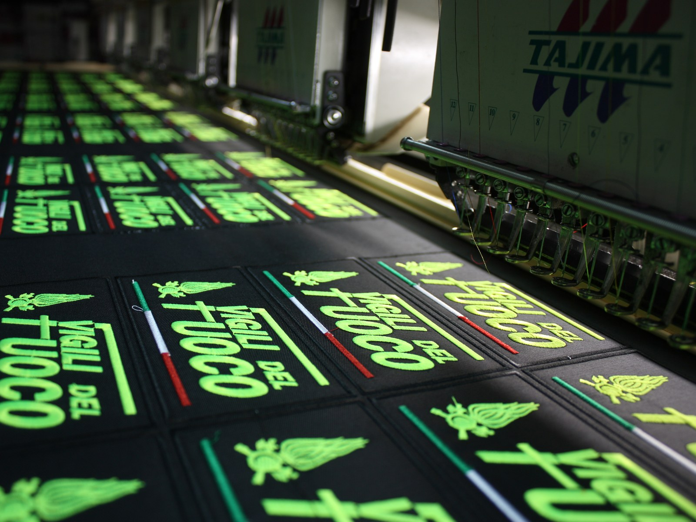

Dans notre atelier
PatchLab est né de l'expérience de production d'Euroricami : machines, piquage, fils, échantillonnage et archivage technique travaillent ensemble pour transformer un dessin en écusson réel.
Les machines ne suffisent pas
Une machine à broder exécute des instructions. Les bonnes instructions viennent du piquage : la traduction experte d'un dessin en séquences de points, de tensions et de sens de fil.
La même machine, avec deux fichiers différents, produit deux écussons différents. L'un précis et solide. L'autre truffé de défauts qui n'apparaissent qu'en production de série.
La compétence technique de celui qui prépare le fichier machine, c'est ce qui sépare un atelier d'un simple opérateur de machine.

Le pôle écussons
Pas un service annexe. Un pôle dédié au sein d'Euroricami. Selon le projet, la production est réalisée dans notre atelier ou confiée à des partenaires spécialisés sélectionnés et contrôlés par PatchLab : le choix dépend de la technique, des volumes et des exigences de finition.
Échantillonnage
Lorsque le projet le prévoit, nous réalisons l'échantillon physique à partir d'un fichier validé. Le client le valide — ou demande des modifications — sur la pièce réelle, et non sur une simulation numérique.
Piquage interne
Le fichier machine est préparé en interne pour les techniques que nous réalisons. C'est l'étape la plus technique de tout le processus : un fichier défectueux donne un résultat défectueux, quel que soit le prix.
Contrôle qualité
Chaque écusson est vérifié avant livraison. Couleurs, dimensions, bordure et dos sont comparés à la référence validée. Nous ne livrons pas de pièces non conformes.
Archive technique
Le fichier machine, la référence validée et les spécifications techniques sont archivés après chaque commande. Un réassort repart de ces données, sans refaire le piquage ni la validation si les spécifications n'ont pas changé.
Du fichier à l'écusson
Six étapes techniques, chacune avec un impact sur le résultat final.
Fichier graphique
Le fichier fourni par le client est analysé par rapport à la taille finale de l'écusson. Lisibilité des textes, nombre de couleurs, complexité du dessin : tout cela détermine si la technique retenue est réalisable — et si des ajustements sont nécessaires.
Fichier machine
Le dessin est traduit en instructions machine : séquence de points, sens, tensions, couleurs, arrêts. C'est l'étape qui demande le plus de compétence technique — et celle qui pèse le plus sur le résultat final.
Fils et base
Les fils sont sélectionnés d'après les couleurs du dessin. La base — twill, feutre ou autre — est choisie selon l'esthétique recherchée et l'utilisation prévue.
Première production
Lorsqu'un échantillon physique est prévu, il est produit à partir du fichier machine définitif. C'est la pièce réelle que le client voit, touche et valide avant le lancement de la production en série.
Finitions
Après la production, chaque écusson reçoit sa bordure — bourdon, découpe laser ou autre — et le dos convenu avec le client : à coudre, thermocollant, fixation velcro (côté crochet) ou combinaisons.
Contrôle qualité
Chaque lot produit est vérifié avant livraison. La comparaison se fait par rapport à la référence validée, et non à des paramètres abstraits. Les pièces non conformes sont écartées avant l'emballage.
Ce que nous vérifions avant la livraison
Le contrôle n'est pas une formalité administrative. C'est ce qui sépare un bon lot d'un lot à refaire.
Points de contrôle
- Couleurs — conformes à la référence validée
- Dimensions — conformes aux spécifications du projet
- Bordure — intacte, régulière, sans manques ni irrégularités
- Dos — correctement appliqué et uniforme
- Fils volants — aucun fil non coupé visible
- Propreté générale — pas de défaut de moulage, de brûlure ni de résidu de production
Les pièces qui ne passent pas le contrôle ne sont pas livrées. Le lot est complété ou relancé avant expédition.
Chaque projet laisse une trace
Après chaque commande terminée, nous archivons le fichier machine définitif, une copie de la référence validée, les spécifications techniques et les notes de production utiles.
Ces données n'expirent pas. Un client qui revient deux ans plus tard pour commander à nouveau le même écusson retrouve les fichiers exactement là où nous les avions laissés.
Ce que cela change pour les réassorts
Si les spécifications ne changent pas, le réassort part du fichier déjà validé. Il n'est pas nécessaire de repayer le piquage, de refaire la validation ni de repartir de zéro. Le processus est plus rapide et moins coûteux que la première commande.
Si les spécifications changent — dimensions différentes, visuel mis à jour, nouveau dos — nous déterminons ensemble ce qui doit être refait et ce qui peut être réutilisé depuis l'archive.
Un projet à concrétiser ?
Envoyez-nous votre visuel et les informations de base. Nous analyserons le fichier, déterminerons la technique adaptée et préparerons la proposition.
Découvrir notre méthode